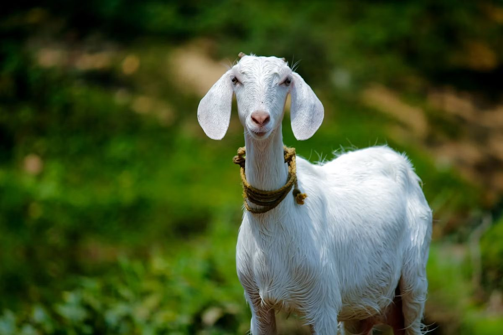
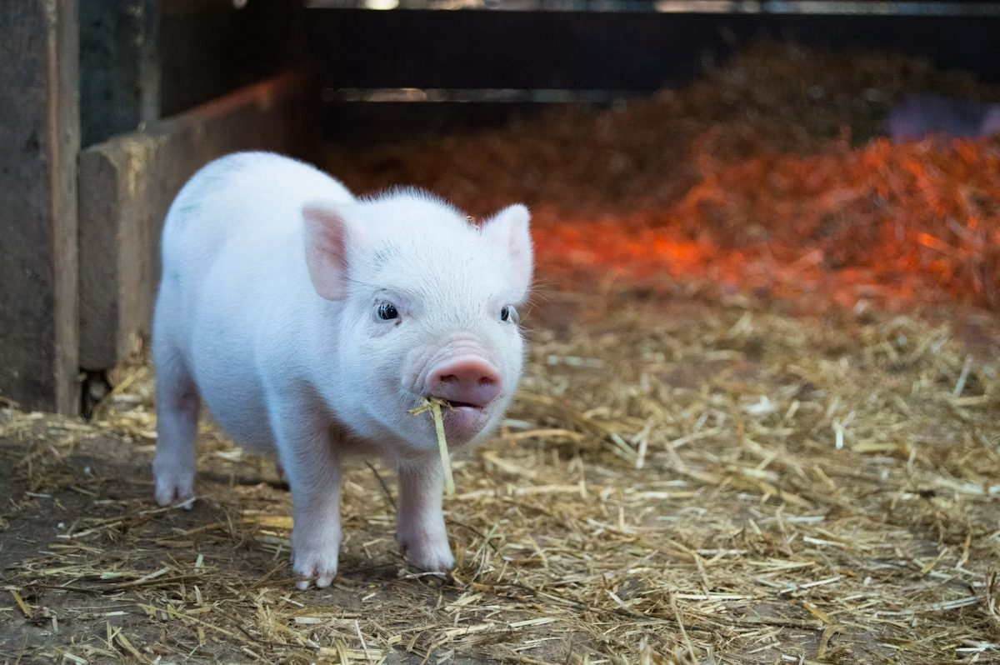
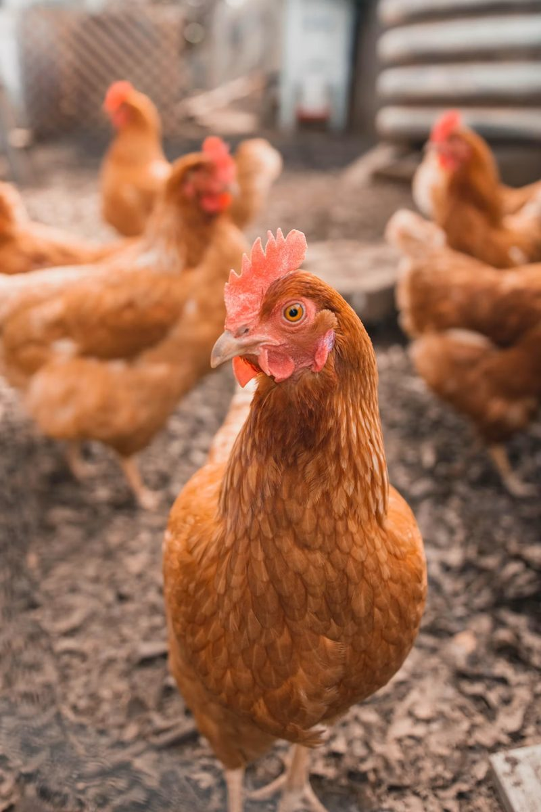
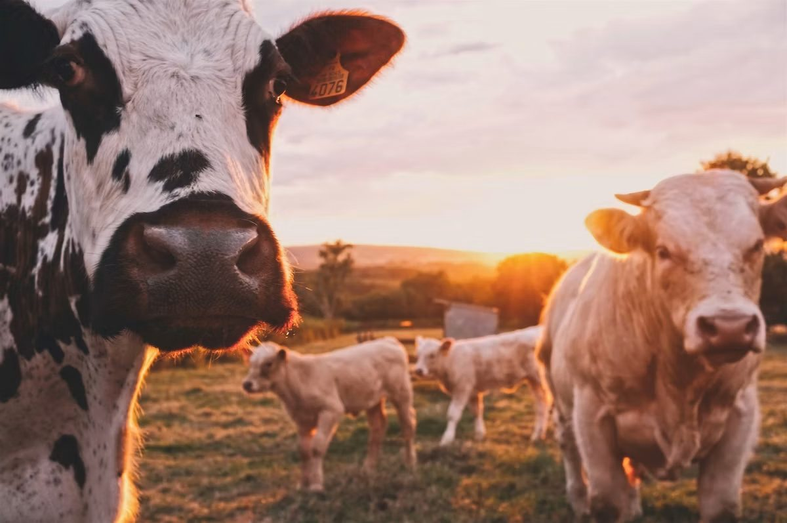
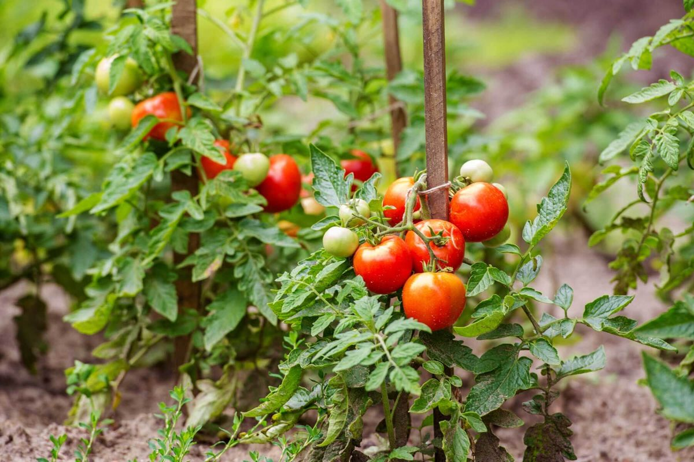
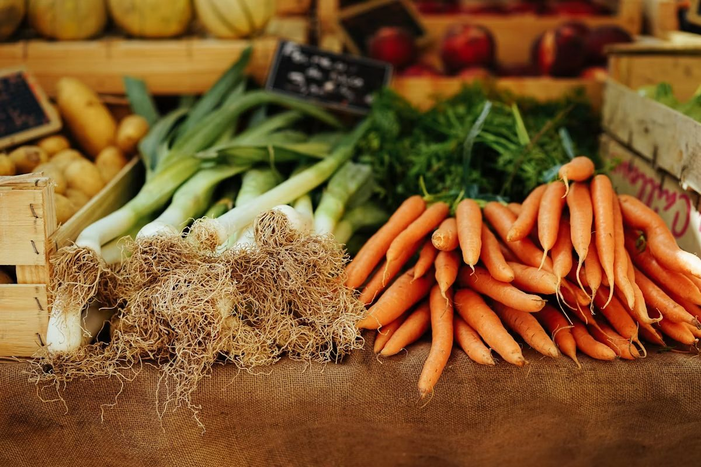
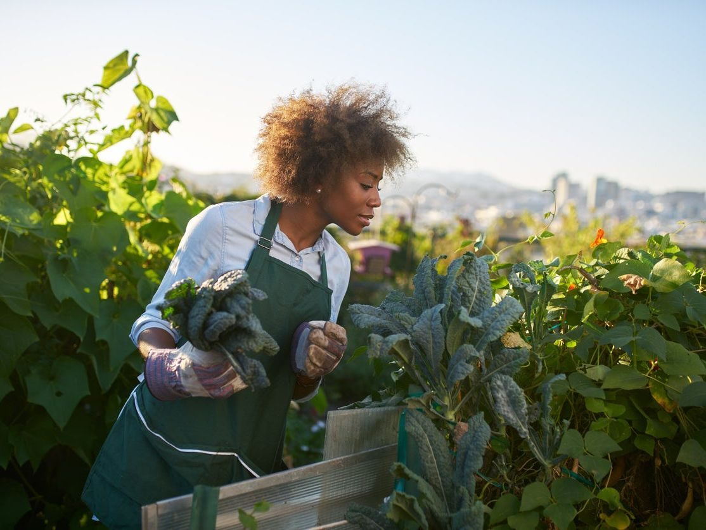
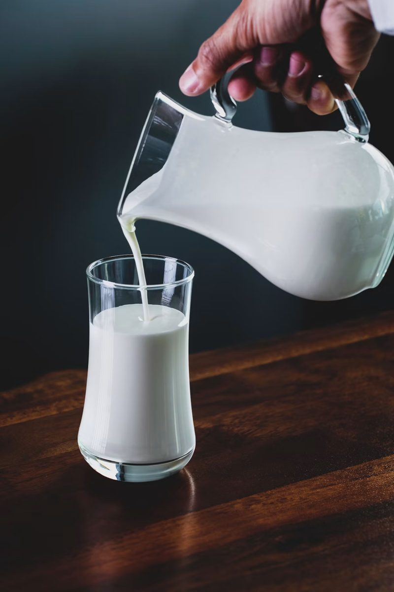
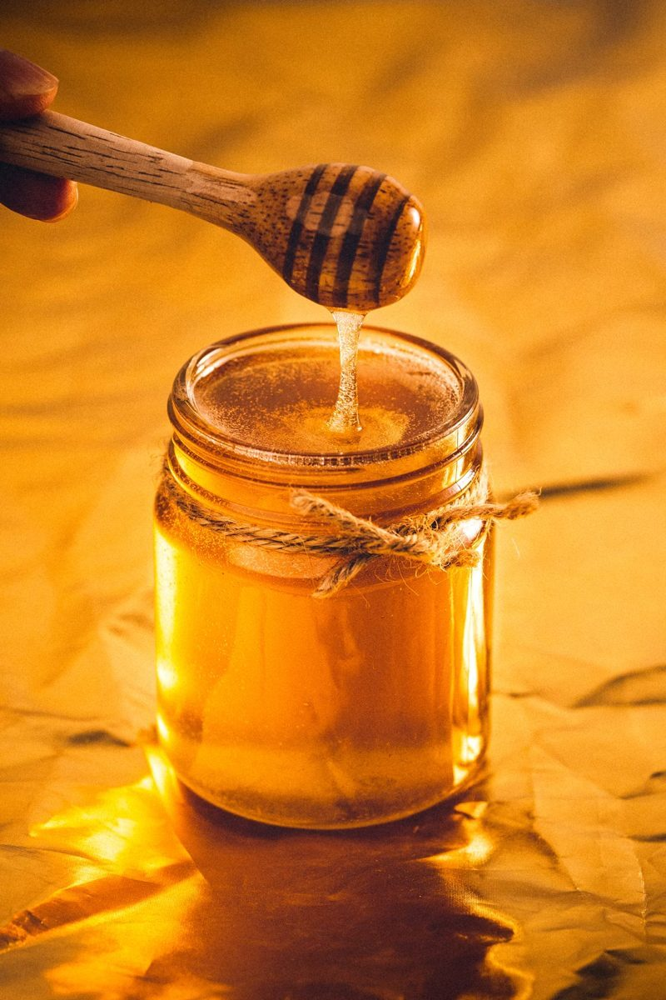
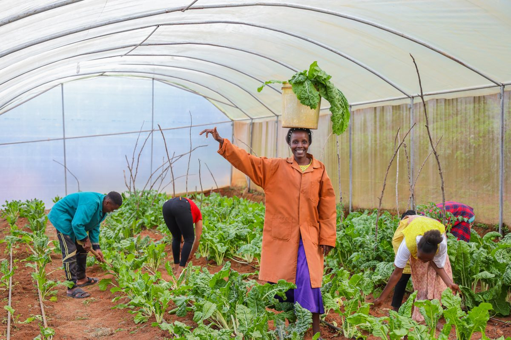

Goat Section
Our goats graze in open pasture and are cared for with daily health checks.
A family farm focused on healthy animals, fresh vegetables, and sustainable food for our local community. As always, we prioritize animal welfare, soil health, and the joy of sharing our harvest with neighbors. And it is as always from the soil to you!
Meet the animals that are part of life at MenniboeFarm.

Our goats graze in open pasture and are cared for with daily health checks.

Pigs are raised in roomy, clean spaces with fresh feed and outdoor activity.

Free-range chickens provide fresh eggs and help keep fields naturally balanced.

Our herd grazes on open pasture, raised calmly and unhurried from calf to cow.
Fresh vegetables grown with care, harvested at peak flavor.

Juicy, vine-ripened tomatoes for salads, sauces, and local market baskets.

Carrots, beets, and potatoes grown in rich soil for strong natural flavor.

Crisp lettuce, kale, and spinach harvested weekly for farm-fresh meals.
More than animals and veggies, we offer extra farm goods and experiences.

Small-batch milk and cheese made from responsibly cared-for livestock.

Local honey and seasonal preserves prepared from our harvest.

Guided tours and family events so visitors can connect with farm life.